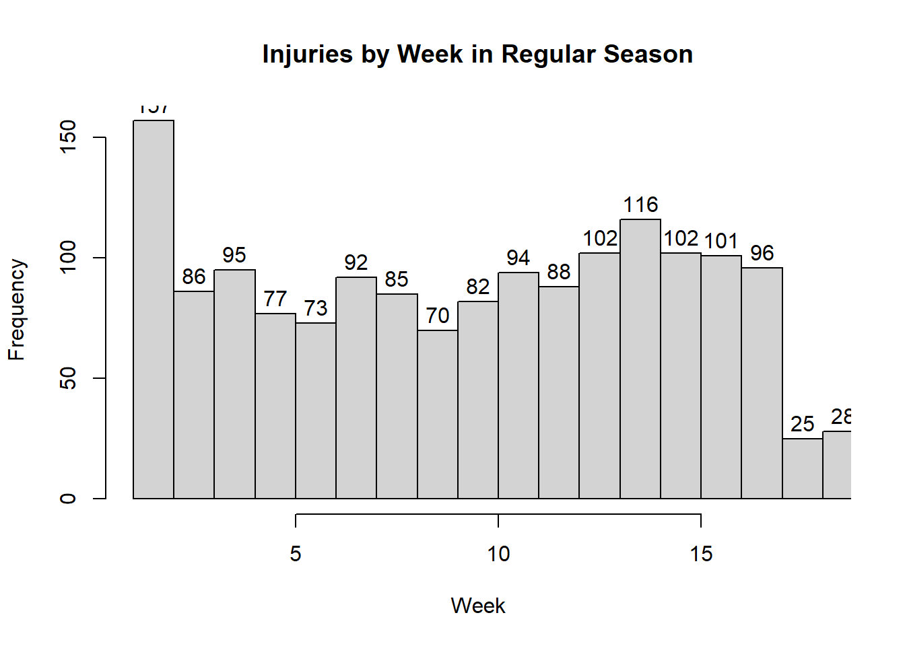
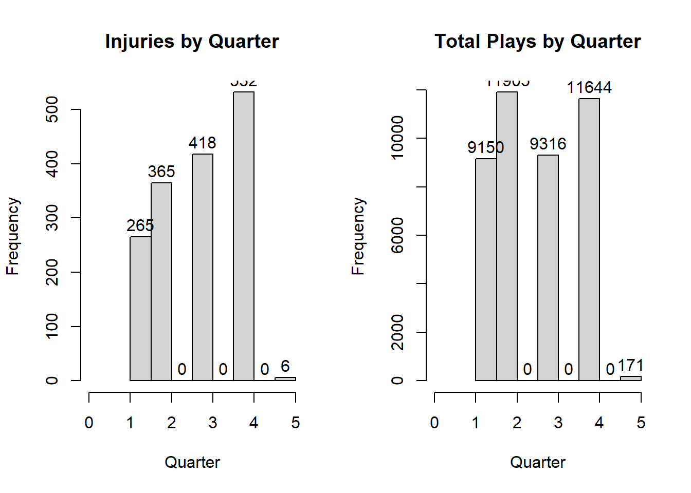
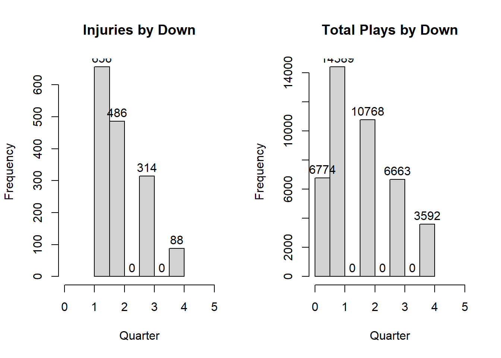
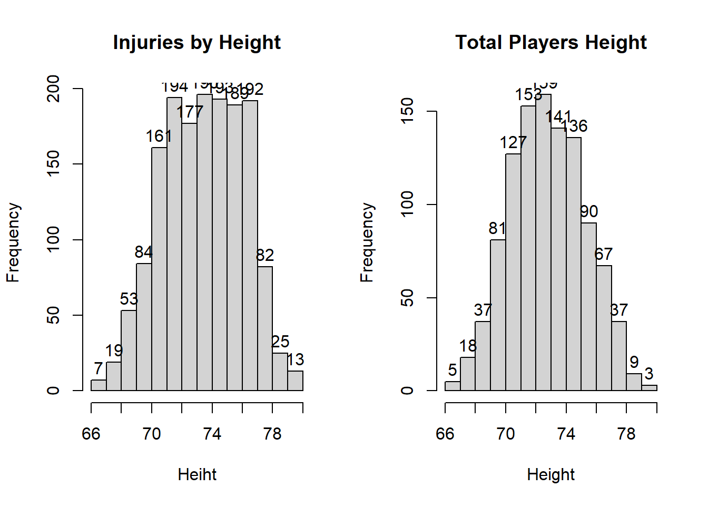
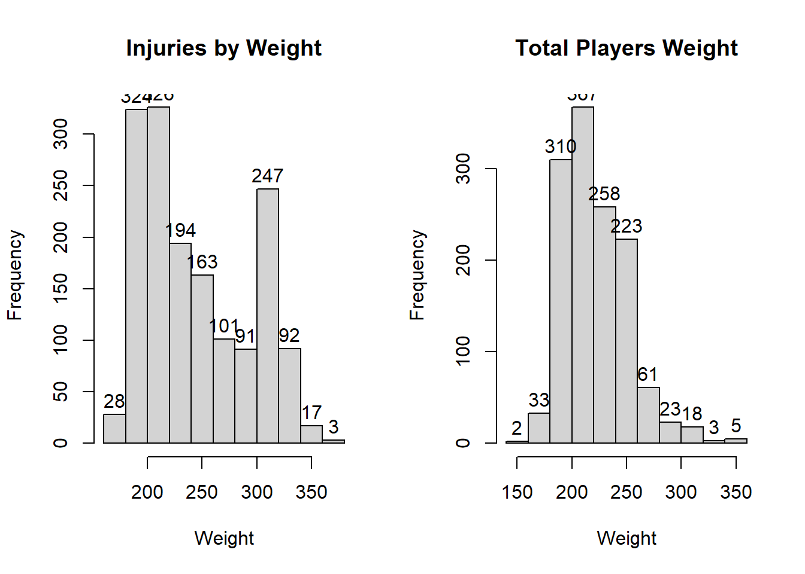
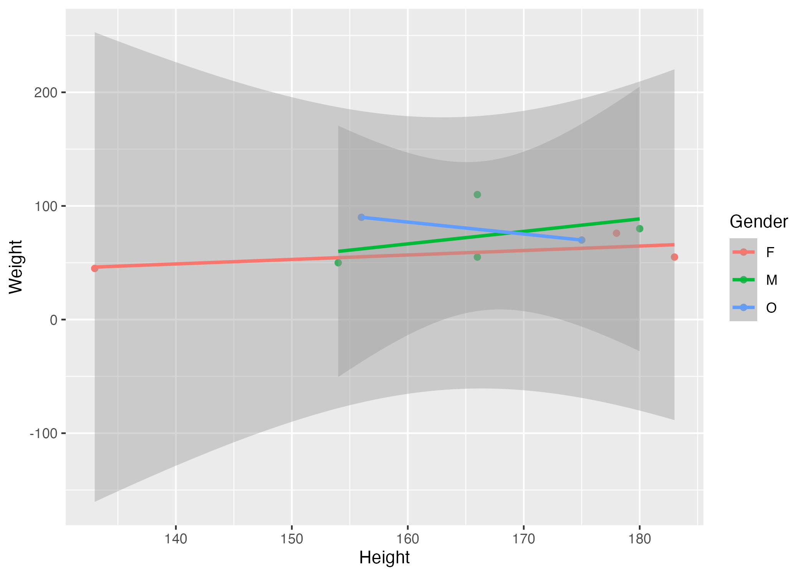

#Loading the Data Sets
#install.packages("RCurl")
#library(RCurl)
setwd("C:/Users/Brody Johnson/Desktop/PracticumII-course/BrodyJohnson-P2-portfolio")
# Injury Player Data
#injuries <- read.csv(text = getURL("https://raw.githubusercontent.com/btj5z2/BrodyJohnson-P2-portfolio/main/position_injury_player_2019_2020_update.csv")) #also works but not needed
injuries = read.csv(here("position_injury_player_2019_2020_update.csv"))
# Cumulative Play data
#pbp <- read.csv(text = getURL("https://raw.githubusercontent.com/btj5z2/BrodyJohnson-P2-portfolio/main/pbp-2019.csv")) #short for play-by-play #also works but not needed
pbp = read.csv(here("pbp-2019.csv"))
#Player Demographic data
#players <- read.csv(text = getURL("https://raw.githubusercontent.com/btj5z2/BrodyJohnson-P2-portfolio/main/player_position_Rmd1.csv"))
players = read.csv(here("players (1).csv"))Parameters associated with Injuries in the NFL
The structure below is one possible setup for a data analysis project (including the course project). For a manuscript, adjust as needed. You don’t need to have exactly these sections, but the content covering those sections should be addressed.
This uses MS Word as output format. See here for more information. You can switch to other formats, like html or pdf. See the Quarto documentation for other formats.
1 Summary/Abstract
The goal of this project will be to find variables related to injuries observed in the NFL. That is, find the common play types, game situation (time remaining, down, yards to go, etc.), and injured player metrics (position, height, body weight, etc.) that has a correlation to causing the resulting injury.
2 Introduction
2.1 General Background Information
For years, the NFL has been making changes in the game in an attempt to prevent player injuries. These changes range from rule modifications to investment in advancements to the players pads and helmets. Hopefully, the findings from this project can help inform players, coaches, and who knows, the NFL about the metrics for a higher risk in injury.
2.2 Description of data and data source
Three data sets have been identified for this project. The primary data set (“Injury Player Data” obtained from a Github repository contain 1,586 obervations) consists of every play ran in the NFL containing an injury during the 2019-2020 season. Some of the things contained in this data include the teams playing, the week in the season, play description, injury area, and injured player metrics. Two other data sets were obtained from Kaggle. The first is a “cumulative play data” containing information about every play ran in the 2019-2020 NFL season (42,186 observations). Information such as the teams playing, play description, and time in the game when it was ran. The last data set is the “player demographic data” containing information about all NFL players in the 2015-2019 seasons (11,145 observations). This data set has player metrics such as height, weight, date of birth, etc.
2.3 Questions/Hypotheses to be addressed
State the research questions you plan to answer with this analysis. My hope is to answer the following question: What metrics, if any, are available that can help predict whether an injury may occur? In turn, this has the potential to answer more questions. For example: 1. For coaches, are there specific play types that lead to more injuries? 2. For players, is there a goal weight for certain positions that can reduce the liklihood of injury?
To cite other work (important everywhere, but likely happens first in introduction), make sure your references are in the bibtex file specified in the YAML header above (here dataanalysis_template_references.bib) and have the right bibtex key. Then you can include like this:
Examples of reproducible research projects can for instance be found in (McKay, Ebell, Billings, et al., 2020; McKay, Ebell, Dale, Shen, & Handel, 2020)
3 Methods
Describe your methods. That should describe the data, the cleaning processes, and the analysis approaches. You might want to provide a shorter description here and all the details in the supplement.
In both the “Injury Player Data” set and “cumulative play data” set, the play descriptions will need to be boiled down to simplified play types (pass, run, fumble, etc.). Next, a lot of what looks like unnecessary plays are included in the “cumulative play data” set such as end of quarters and games so these observations can be filtered out. Lastly, empty columns were noticed in the “cumulative play data” that can be removed.
3.1 Data aquisition
As applicable, explain where and how you got the data. If you directly import the data from an online source, you can combine this section with the next.
3.2 Data import and cleaning
Write code that reads in the file and cleans it so it’s ready for analysis. Since this will be fairly long code for most datasets, it might be a good idea to have it in one or several R scripts. If that is the case, explain here briefly what kind of cleaning/processing you do, and provide more details and well documented code somewhere (e.g. as supplement in a paper). All materials, including files that contain code, should be commented well so everyone can follow along.
3.3 Statistical analysis
Explain anything related to your statistical analyses. The big picture look at the analysis will be to compare the frequency of parameters in the injury data set to the same parameters in the two supporting data sets. For example, we may find in the injury data set that most injuries occur during “short pass” plays. However, if we were to find the “short pass” play is the most common play type ran in the NFL, this becomes less significant of a finding.
4 Results
4.1 Exploratory/Descriptive analysis
Use a combination of text/tables/figures to explore and describe your data. Show the most important descriptive results here. Additional ones should go in the supplement. Even more can be in the R and Quarto files that are part of your project.
4.1.1 Structures of each data set
#Structure of Injury Data Set
str(injuries)'data.frame': 1586 obs. of 48 variables:
$ player_id : chr "2019_ARI_1_Murray" "2019_ARI_13_Kirk" "2019_ARI_21_Peterson" "2019_ARI_21_Peterson" ...
$ game_id : chr "2019_16_ARI_SEA" "2019_04_SEA_ARI" "2019_10_ARI_TB" "2019_10_ARI_TB" ...
$ home_team : chr "SEA" "ARI" "TB" "TB" ...
$ away_team : chr "ARI" "SEA" "ARI" "ARI" ...
$ season_type : chr "REG" "REG" "REG" "REG" ...
$ week.x : int 16 4 10 10 8 13 16 16 7 17 ...
$ posteam : chr "ARI" "ARI" "TB" "TB" ...
$ posteam_type : chr "away" "home" "home" "home" ...
$ defteam : chr "SEA" "SEA" "ARI" "ARI" ...
$ side_of_field : chr "SEA" "SEA" "TB" "TB" ...
$ yardline_100 : int 31 15 72 84 67 91 81 10 67 38 ...
$ game_date : int 43821 43737 43779 43779 43765 43800 43821 43821 43758 43828 ...
$ quarter_seconds_remaining: int 735 26 453 437 269 653 890 40 155 155 ...
$ half_seconds_remaining : int 1635 26 1353 437 1169 1553 890 40 155 1055 ...
$ game_seconds_remaining : int 1635 26 1353 437 1169 1553 890 1840 155 1055 ...
$ game_half : chr "Half2" "Half2" "Half2" "Half2" ...
$ qtr : int 3 4 3 4 3 3 4 2 4 3 ...
$ down : int 3 2 2 1 3 3 1 1 4 3 ...
$ time : num 0.5104 0.0181 0.3146 0.3035 0.1868 ...
$ yrdln : chr "SEA 31" "SEA 15" "TB 28" "TB 16" ...
$ ydstogo : int 12 3 7 10 2 9 10 10 15 4 ...
$ desc : chr "(12:15) (Shotgun) 1-K.Murray scrambles left end pushed ob at SEA 27 for 4 yards (30-B.McDougald). ARI-1-K.Murra"| __truncated__ "(:26) (Shotgun) 1-K.Murray pass short right to 13-C.Kirk to SEA 9 for 6 yards (24-J.Taylor). ARI-13-C.Kirk was "| __truncated__ "(7:33) (Shotgun) 3-J.Winston pass short right to 27-R.Jones to TB 33 for 5 yards (58-J.Hicks). ARI-21-P.Peterso"| __truncated__ "(7:17) (Shotgun) 3-J.Winston pass incomplete deep middle to 13-M.Evans [98-C.Peters]. ARI-21-P.Peterson was inj"| __truncated__ ...
$ injured_first_name : chr "K" "C" "P" "P" ...
$ injured_last_name : chr "Murray" "Kirk" "Peterson" "Peterson" ...
$ injured_team : chr "ARI" "ARI" "ARI" "ARI" ...
$ injured_player_num : int 1 13 21 21 29 34 41 41 43 54 ...
$ Contact..non.contact : chr "non contact" "contact" "non contact" "non contact" ...
$ injury.area : chr "lower body" "knee" "lower body" "lower body" ...
$ player.role : chr "ball carrier" "pass catcher" "AFP" "pas defender" ...
$ season.x : int 2019 2019 2019 2019 2019 2019 2019 2019 2019 2019 ...
$ season.y : int 2019 2019 2019 2019 2019 2019 2019 2019 2019 2019 ...
$ team : chr "ARI" "ARI" "ARI" "ARI" ...
$ position : chr "QB" "WR" "DB" "DB" ...
$ depth_chart_position : chr "QB" "WR" "CB" "CB" ...
$ jersey_number : int 1 13 21 21 29 34 41 41 43 54 ...
$ status : chr "Active" "Active" "Active" "Active" ...
$ full_name : chr "Kyler Murray" "Christian Kirk" "Patrick Peterson" "Patrick Peterson" ...
$ first_name : chr "Kyler" "Christian" "Patrick" "Patrick" ...
$ last_name : chr "Murray" "Kirk" "Peterson" "Peterson" ...
$ birth_date : chr "8/7/1997" "11/18/1996" "7/11/1990" "7/11/1990" ...
$ height : int 70 71 73 73 69 71 73 73 73 76 ...
$ weight : int 207 200 203 203 210 190 211 211 235 245 ...
$ college : chr "Oklahoma" "Texas A&M" "Louisiana State" "Louisiana State" ...
$ years_exp : int 0 1 8 8 1 0 3 3 2 5 ...
$ game_type : chr "REG" "REG" "REG" "REG" ...
$ football_name : chr "Kyler" "Christian" "Patrick" "Patrick" ...
$ smart_id : chr "32004d55-5267-0413-8d36-a5c3fd781aa0" "32004b49-5225-7918-e402-81feed3bdafb" "32005045-5441-5511-6ae6-059d8eb99a8d" "32005045-5441-5511-6ae6-059d8eb99a8d" ...
$ entry_year : int 2019 2018 2011 2011 2018 2019 2016 2016 2017 2014 ...#Structure of Play-by-Play Data
str(pbp)'data.frame': 42186 obs. of 45 variables:
$ GameId : int 2019122201 2019122201 2019122201 2019122201 2019122201 2019122201 2019122201 2019122201 2019122201 2019122201 ...
$ GameDate : chr "2019-12-22" "2019-12-22" "2019-12-22" "2019-12-22" ...
$ Quarter : int 4 4 4 4 4 4 4 4 4 3 ...
$ Minute : int 1 1 1 1 2 2 2 2 2 1 ...
$ Second : int 40 47 51 57 3 15 20 25 43 4 ...
$ OffenseTeam : chr "LAC" "LAC" "LAC" "LAC" ...
$ DefenseTeam : chr "LV" "LV" "LV" "LV" ...
$ Down : int 3 2 1 2 1 3 2 1 2 0 ...
$ ToGo : int 9 9 9 2 10 6 6 10 4 0 ...
$ YardLine : int 91 91 91 86 78 68 68 64 55 85 ...
$ X : logi NA NA NA NA NA NA ...
$ SeriesFirstDown : int 0 0 0 0 0 1 0 0 1 1 ...
$ X.1 : logi NA NA NA NA NA NA ...
$ NextScore : int 0 0 0 0 0 0 0 0 0 0 ...
$ Description : chr "(1:40) (SHOTGUN) 17-P.RIVERS PASS INCOMPLETE SHORT LEFT." "(1:47) (SHOTGUN) 17-P.RIVERS PASS INCOMPLETE SHORT LEFT TO 13-K.ALLEN (26-N.LAWSON)." "(1:51) (SHOTGUN) 17-P.RIVERS PASS INCOMPLETE SHORT RIGHT TO 81-M.WILLIAMS (22-K.NIXON)." "(1:57) (SHOTGUN) 17-P.RIVERS PASS INCOMPLETE SHORT RIGHT TO 81-M.WILLIAMS [98-M.CROSBY]. PENALTY ON OAK-91-B.MA"| __truncated__ ...
$ TeamWin : int 0 0 0 0 0 0 0 0 0 0 ...
$ X.2 : logi NA NA NA NA NA NA ...
$ X.3 : logi NA NA NA NA NA NA ...
$ SeasonYear : int 2019 2019 2019 2019 2019 2019 2019 2019 2019 2019 ...
$ Yards : int 0 0 0 0 8 10 0 4 9 0 ...
$ Formation : chr "SHOTGUN" "SHOTGUN" "SHOTGUN" "SHOTGUN" ...
$ PlayType : chr "PASS" "PASS" "PASS" "PASS" ...
$ IsRush : int 0 0 0 0 0 0 0 0 0 0 ...
$ IsPass : int 1 1 1 1 1 1 1 1 1 0 ...
$ IsIncomplete : int 1 1 1 1 0 0 1 0 0 0 ...
$ IsTouchdown : int 0 0 0 0 0 0 0 0 0 0 ...
$ PassType : chr "SHORT LEFT" "SHORT LEFT" "SHORT RIGHT" "SHORT RIGHT" ...
$ IsSack : int 0 0 0 0 0 0 0 0 0 0 ...
$ IsChallenge : int 0 0 0 0 0 0 0 0 0 0 ...
$ IsChallengeReversed : int 0 0 0 0 0 0 0 0 0 0 ...
$ Challenger : logi NA NA NA NA NA NA ...
$ IsMeasurement : int 0 0 0 0 0 0 0 0 0 0 ...
$ IsInterception : int 0 0 0 0 0 0 0 0 0 0 ...
$ IsFumble : int 0 0 0 0 0 0 0 0 0 0 ...
$ IsPenalty : int 0 0 0 1 0 0 0 0 0 0 ...
$ IsTwoPointConversion : int 0 0 0 0 0 0 0 0 0 0 ...
$ IsTwoPointConversionSuccessful: int 0 0 0 0 0 0 0 0 0 0 ...
$ RushDirection : chr "" "" "" "" ...
$ YardLineFixed : int 9 9 9 14 22 32 32 36 45 15 ...
$ YardLineDirection : chr "OPP" "OPP" "OPP" "OPP" ...
$ IsPenaltyAccepted : int 0 0 0 1 0 0 0 0 0 0 ...
$ PenaltyTeam : chr "" "" "" "OAK" ...
$ IsNoPlay : int 0 0 0 1 0 0 0 0 0 0 ...
$ PenaltyType : chr "" "" "" "DEFENSIVE OFFSIDE" ...
$ PenaltyYards : int 0 0 0 5 0 0 0 0 0 0 ...#Structure of All Players Data Set
str(players)'data.frame': 1303 obs. of 7 variables:
$ nflId : int 2539334 2539653 2543850 2555162 2555255 2555543 2556445 2507763 2532842 2540158 ...
$ height : chr "72" "70" "69" "73" ...
$ weight : int 190 186 186 227 232 216 211 200 243 250 ...
$ birthDate : chr "1990-09-10" "1988-11-01" "1991-12-18" "1994-11-04" ...
$ collegeName: chr "Washington" "Southeastern Louisiana" "Purdue" "Louisiana State" ...
$ position : chr "CB" "CB" "SS" "MLB" ...
$ displayName: chr "Desmond Trufant" "Robert Alford" "Ricardo Allen" "Deion Jones" ...4.1.2 Exploratory Analysis of parameters only in the Injury Data Set
hist(injuries$week.x, breaks=24,main="Injuries by Week in Regular Season", xlim=c(1,18),xlab="Week",labels =T)
4.1.3 Exploratory Analysis of parameters in the Injury Data Set and Play-by-play Data Set
par(mfrow=c(1,2))
hist(injuries$qtr, breaks=6,main="Injuries by Quarter", xlim=c(0,5),xlab="Quarter",labels =T)
hist(pbp$Quarter, breaks=6,main="Total Plays by Quarter", xlim=c(0,5), xlab="Quarter",labels =T)
par(mfrow=c(1,2))
hist(injuries$down, breaks=6,main="Injuries by Down", xlim=c(0,5),xlab="Quarter",labels =T)
hist(pbp$Down, breaks=6,main="Total Plays by Down", xlim=c(0,5), xlab="Quarter",labels =T)
4.1.4 Exploratory Analysis of parameters in the Injury Data Set and Cumulative Player Data Set
par(mfrow=c(1,2))
hist(injuries$height, breaks=10,main="Injuries by Height", xlab="Heiht",labels =T)
hist(as.numeric(players$height), breaks=10,main="Total Players Height", xlab="Height",labels =T) #Nedd to look into why not all numericWarning in hist(as.numeric(players$height), breaks = 10, main = "Total Players
Height", : NAs introduced by coercion
par(mfrow=c(1,2))
hist(injuries$weight, breaks=10,main="Injuries by Weight", xlab="Weight",labels =T)
hist(players$weight, breaks=10,main="Total Players Weight", xlab="Weight",labels =T) 
Table 1 shows a summary of the data.
Note the loading of the data providing a relative path using the ../../ notation. (Two dots means a folder up). You never want to specify an absolute path like C:\ahandel\myproject\results\ because if you share this with someone, it won’t work for them since they don’t have that path. You can also use the here R package to create paths. See examples of that below. I recommend the here package, but I’m showing the other approach here just in case you encounter it.
| skim_type | skim_variable | n_missing | complete_rate | factor.ordered | factor.n_unique | factor.top_counts | numeric.mean | numeric.sd | numeric.p0 | numeric.p25 | numeric.p50 | numeric.p75 | numeric.p100 | numeric.hist |
|---|---|---|---|---|---|---|---|---|---|---|---|---|---|---|
| factor | Gender | 0 | 1 | FALSE | 3 | M: 4, F: 3, O: 2 | NA | NA | NA | NA | NA | NA | NA | NA |
| numeric | Height | 0 | 1 | NA | NA | NA | 165.66667 | 15.97655 | 133 | 156 | 166 | 178 | 183 | ▂▁▃▃▇ |
| numeric | Weight | 0 | 1 | NA | NA | NA | 70.11111 | 21.24526 | 45 | 55 | 70 | 80 | 110 | ▇▂▃▂▂ |
4.2 Basic statistical analysis
To get some further insight into your data, if reasonable you could compute simple statistics (e.g. simple models with 1 predictor) to look for associations between your outcome(s) and each individual predictor variable. Though note that unless you pre-specified the outcome and main exposure, any “p<0.05 means statistical significance” interpretation is not valid.
Figure 1 shows a scatterplot figure produced by one of the R scripts.

4.3 Full analysis
Use one or several suitable statistical/machine learning methods to analyze your data and to produce meaningful figures, tables, etc. This might again be code that is best placed in one or several separate R scripts that need to be well documented. You want the code to produce figures and data ready for display as tables, and save those. Then you load them here.
Example Table 2 shows a summary of a linear model fit.
| term | estimate | std.error | statistic | p.value |
|---|---|---|---|---|
| (Intercept) | 149.2726967 | 23.3823360 | 6.3839942 | 0.0013962 |
| Weight | 0.2623972 | 0.3512436 | 0.7470519 | 0.4886517 |
| GenderM | -2.1244913 | 15.5488953 | -0.1366329 | 0.8966520 |
| GenderO | -4.7644739 | 19.0114155 | -0.2506112 | 0.8120871 |
5 Discussion
5.1 Summary and Interpretation
Summarize what you did, what you found and what it means.
5.2 Strengths and Limitations
Discuss what you perceive as strengths and limitations of your analysis.
5.3 Conclusions
What are the main take-home messages?
Include citations in your Rmd file using bibtex, the list of references will automatically be placed at the end
This paper (Leek & Peng, 2015) discusses types of analyses.
These papers (McKay, Ebell, Billings, et al., 2020; McKay, Ebell, Dale, et al., 2020) are good examples of papers published using a fully reproducible setup similar to the one shown in this template.
Note that this cited reference will show up at the end of the document, the reference formatting is determined by the CSL file specified in the YAML header. Many more style files for almost any journal are available. You also specify the location of your bibtex reference file in the YAML. You can call your reference file anything you like, I just used the generic word references.bib but giving it a more descriptive name is probably better.
6 References
Leek, J. T., & Peng, R. D. (2015). Statistics. What is the question? Science (New York, N.Y.), 347(6228), 1314–1315. https://doi.org/10.1126/science.aaa6146
McKay, B., Ebell, M., Billings, W. Z., Dale, A. P., Shen, Y., & Handel, A. (2020). Associations Between Relative Viral Load at Diagnosis and Influenza A Symptoms and Recovery. Open Forum Infectious Diseases, 7(11), ofaa494. https://doi.org/10.1093/ofid/ofaa494
McKay, B., Ebell, M., Dale, A. P., Shen, Y., & Handel, A. (2020). Virulence-mediated infectiousness and activity trade-offs and their impact on transmission potential of influenza patients. Proceedings. Biological Sciences, 287(1927), 20200496. https://doi.org/10.1098/rspb.2020.0496